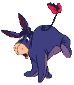
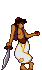

Dedico esta página aquellas personas que aprovechan cualquier oportunidad para criticar a los demás, protestar por todo y así joder la marrana a gusto
La marrana en cuestión no tiene que ver con la hembra del cerdo, sino con el eje de la rueda de la noria, a la que algunos ponían obstáculos de palos o echaban arena para impedir el giro de dicha rueda. Se le llamaba marrana, porque el ruido que hacía al girar recordaba el gruñido de ese animal.
El verbo joder procede del latín futuere. Primeramente quedó la palabra en foder. En el Renacimiento se sustituyó la f por la h aspirada y, posteriormente, se incluyó en el diccionario español sustituyendo la h aspirada por la j.
En la actualidad decimos que alguien "jode la marrana" cuando crea problemas y pone impedimentos donde no los hay, mostrándose en contra de algo con los que todos están conformes y les parece bien. Y... como vuelvo a repetir, joder la marrana a gusto.